Introduction
Ce rapport accompagne le relevé d'audit effectué sur le site « covid19.public.lu ».
La méthodologie d'audit employée repose sur le référentiel RGAA 4.1, consultable à l'adresse suivante : https://accessibilite.public.lu/fr/rgaa4.1/criteres.html
L'audit a été réalisé au moyen de l'utilisation de navigateurs web et d'outils spécialisés. Des tests de restitution ont également été effectués conformément à la base de référence définie par le RGAA 4.1.
Échantillon
L'audit a porté sur un échantillon de 13 pages pour le niveau double A (AA) :
| Nº page | Titre de la page | URL |
|---|---|---|
| P01 | Accueil | https://covid19.public.lu/fr.html |
| P02 | Mentions légales | https://covid19.public.lu/fr/support/aspects-legaux.html |
| P03 | Contact | https://covid19.public.lu/fr/support/contact.html |
| P04 | Accessibilité | https://covid19.public.lu/fr/support/accessibilite.html |
| P05 | Plan du site | https://covid19.public.lu/fr/support/plan-du-site.html |
| P06 | Résultats de recherche | https://covid19.public.lu/fr/support/recherche.html?q=vaccin |
| P07 | Testing | https://covid19.public.lu/fr/testing.html |
| P08 | Tests PCR et autotests | https://covid19.public.lu/fr/testing/pcr-autotest.html |
| P09 | L'actualité de la COVID-19 | https://covid19.public.lu/fr/actualite-covid-19.html |
| P10 | Actualité | https://covid19.public.lu/fr/actualite-covid-19/communiques/2022/03/01-immigration.html |
| P11 | CovidCheck | https://covid19.public.lu/fr/covidcheck.html |
| P12 | Article de blog | https://covid19.public.lu/fr/blog/vaccination/3e-dose.html |
| P13 | Graphiques | https://covid19.public.lu/fr/graph.html |
Environnement de test (base de référence)
Quelques critères RGAA, notamment ceux de la thématique JavaScript, incluent des tests de restitution à effectuer sur des technologies d'assistance associées à des navigateurs et des systèmes d'exploitation. Pour qu'un dispositif HTML / WAI-ARIA ou son alternative soit considéré comme compatible avec l'accessibilité, il faut qu'il soit pleinement fonctionnel, en termes de restitution et de fonctionnalités sur certaines combinaisons. Vous trouverez une explication détaillée de cet environnement de tests dans le document du RGAA 4.1.
Nous détaillons ci-dessous la base de référence utilisée pour réaliser les tests de restitution des composants du site.
Environnement de test – ordinateur
| Technologie d'assistance | Navigateur |
|---|---|
| NVDA 2021.3 | Firefox 98 |
| JAWS 2020 | Firefox 98 |
| VoiceOver | Safari 15 |
Environnement de test — mobile
| Système d'exploitation | Technologie d'assistance | Navigateur |
|---|---|---|
| Android 10 | TalkBack (dernière version) | Chrome 96.0 |
Accessibilité des pages auditées
Le site présente un niveau général d'accessibilité moyen.
Le niveau moyen de conformité relevé atteint 66,18 % de conformité sur l'ensemble des pages auditées, avec 64,00 % de conformité au niveau simple A (A) et 72,22 % de conformité au niveau double A (AA).
Le site est partiellement conforme.
Conformité RGAA 4.1 du site
| Conforme | Non conforme | |
|---|---|---|
| A | 64,00 % | 36,00 % |
| AA (légal) | 66,18 % | 33,82 % |
Note sur le calcul de conformité
La conformité globale (Tableau « Conformité RGAA 4.1 ») est calculée de la manière suivante : C / (C+NC). C'est le nombre de critères conformes et NC le nombre de critères non conformes.
C'est ce nombre qui constitue la référence légale. Il représente le taux de conformité de l'échantillon.
Il est normal que le taux de conformité global diffère sensiblement du taux de conformité par page. En effet, un critère NC (non conforme) sur une page rend le critère non conforme sur l'ensemble de l'échantillon.
Pour qu'un site soit conforme (100 % des critères applicables sont conformes au niveau AA), il est nécessaire que le taux de conformité par page équivaille à 100 %.
Conformité pour chaque niveau
| Conforme | Non conforme | |
|---|---|---|
| A | 64,00 % | 36,00 % |
| AA | 72,22 % | 27,78 % |
Moyenne par pages
| Nº page | Titre de la page | %C |
|---|---|---|
| P01 | Accueil | 86,67 % |
| P02 | Aspects légaux | 86,49 % |
| P03 | Contact | 86,36 % |
| P04 | Accessibilité | 100,00 % |
| P05 | Plan du site | 97,22 % |
| P06 | Résultats de recherche | 97,56 % |
| P07 | Testing | 94,59 % |
| P08 | Tests PCR et autotests | 93,48 % |
| P09 | L'actualité de la COVID-19 | 100,00 % |
| P10 | Actualité | 91,89 % |
| P11 | CovidCheck | 92,50 % |
| P12 | Article de blog | 86,11 % |
| P13 | Graphiques | 94,74 % |
Moyenne par thématiques
| Thématiques | C | NC |
|---|---|---|
| Images | 0,00 % | 100,00 % |
| Cadres | 100,00 % | 0,00 % |
| Couleurs | 33,33 % | 66,67 % |
| Multimédia | 75,00 % | 25,00 % |
| Tableaux | 60,00 % | 40,00 % |
| Liens | 50,00 % | 50,00 % |
| Script | 33,33 % | 66,67 % |
| Éléments obligatoires | 70,00 % | 30,00 % |
| Structuration | 0,00% | 100,00% |
| Présentation | 83,33 % | 16,67 % |
| Formulaires | 75,00 % | 25,00 % |
| Navigation | 80,00 % | 20,00 % |
| Consultation | 100,00 % | 0,00 % |
Impacts utilisateurs
Les principales personnes impactées sont les personnes aveugles, sourdes et malentendantes. Les problèmes liés à l’absence d’alternative pour les graphiques et de transcription et de sous-titres pour les vidéos rendent parfois difficile l’utilisation du site par ces utilisateurs.
Note sur le relevé des non-conformités
Ne sont cités dans ce rapport que quelques exemples issus du relevé des non-conformités.
De plus, toutes les occurrences d'une non-conformité ne sont pas listées dans le relevé. Par exemple : pour les indications de langue manquantes ou non pertinentes, le relevé mentionne quelques occurrences, mais ne les cite pas toutes.
Avis
Le site a un niveau d'accessibilité moyen. Il reste quelques erreurs qui mettront en difficulté des utilisateurs variés, mais le site ne semble pas utiliser de fonctionnalités complexes. La mise en œuvre des correctifs ne devrait donc pas poser de problèmes particuliers.
Les non-conformités les plus bloquantes pour les utilisateurs concernent :
- Des graphiques sans alternative visible ;
- Des vidéos sans transcription textuelle ni de sous-titres ;
- Des titres manquants ou des niveaux de titres non pertinents ;
- Une image complexe n'a pas d'alternative ni de description détaillée ;
- Un tableau de données complexe sans résumé ni en-têtes correctement déclarés ;
- Des documents bureautiques en téléchargement sans version accessible.
Ce sont donc ces points qui devront nécessiter une attention toute particulière et qui demanderont le plus d'efforts.
Annexe technique
Images
Recommandation
Donner à chaque image porteuse d'information une alternative textuelle pertinente et une description détaillée si nécessaire. Lier les légendes à leurs images. Remplacer les images textes par du texte stylé lorsque c'est possible.
Images de décoration
Le site contient des images de décoration qui ne sont pas correctement identifiées, soit parce qu'elles ont une alternative renseignée, soit parce qu'il manque les attributs nécessaires pour qu'elles soient ignorées par les technologies d'assistance.
Ces images n'apportent aucune information et peuvent causer des problèmes de compréhension pour les aveugles et les grands malvoyants qui vont écouter les contenus avec un lecteur d'écran.
- Dans le cas d'une image insérée avec la balise
img, mettre unalt="". - Dans le cas d'une image insérée avec la balise
svg, mettre une propriété ARIAaria-hidden="true".
Constats sur le site
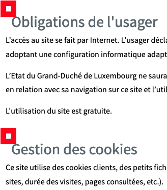Page « Aspects légaux », les images de décoration qui précèdent les titres n'ont pas d'attribut alt.

Page « Actualité », les images de décoration des notes de bas de page n'ont pas d'attribut alt.
Images porteuses d'information
Il est nécessaire de donner une alternative pertinente dans le cas où la suppression de l'image entraînerait un problème de compréhension des contenus.
Images porteuses d'information complexe
Certaines images porteuses d'informations sont complexes et nécessitent une description détaillée, pertinente, structurée et adjacente à l'image afin de permettre aux personnes ne percevant pas les images (comme les personnes aveugles), ou ayant des difficultés à les comprendre lorsqu'elles contiennent du texte (personnes ayant des difficultés de lecture, comme les dyslexiques par exemple) d'accéder à l'information.
Il sera possible de masquer cette description et de prévoir un bouton permettant à l'utilisateur de l'afficher si besoin (par exemple : « Afficher la description de l'image »). Voir un exemple de ce mécanisme. Il est également possible de proposer un lien adjacent à l'image vers la description détaillée.
Constats sur le site
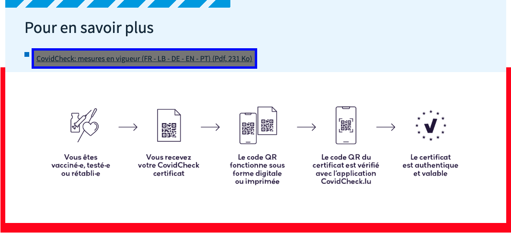Page « CovidCheck », l'image complexe sous le bloc « Pour en savoir plus », qui montre le parcours d'obtention d'un certificat valable, n'a pas d'alternative ni de description détaillée.
- Ajouter à l'image une alternative permettant de comprendre rapidement le sens de l'image. Par exemple
alt="comment obtenir un certificat valable ?"; - Ajouter à l'image une description détaillée adjacente ou atteignable au moyen d'un lien adjacent. La description détaillée serait éventuellement structurée sous la forme d'une liste ordonnée
<ol>/<li>.
Couleurs
Recommandation
Ne pas donner l'information uniquement par la couleur et utiliser des contrastes de couleurs suffisamment élevés pour les textes et les composants d'interface.
Contrastes des textes
Plusieurs couleurs présentent un rapport de contraste insuffisant, ce qui peut poser problème aux grands malvoyants et aux déficients visuels qui ont des difficultés à percevoir les couleurs ou les contrastes.
Rapports de contrastes définis par le RGAA
- Pour les textes qui ont une taille de police calculée inférieure à 24px sans effet de graisse ou une taille de police calculée inférieure à 18,5px avec effet de graisse, le rapport de contraste entre la couleur du texte (y compris le texte en image) et son arrière-plan doit être de 4.5:1, au moins.
- Pour les textes qui ont une taille de police calculée supérieure ou égale à 24px sans effet de graisse ou une taille de police calculée supérieure ou égale à 18,5px avec effet de graisse, le rapport de contraste entre la couleur du texte (y compris le texte en image) et son arrière-plan doit être de 3:1, au moins.
Vous pouvez foncer les couleurs pour obtenir le rapport de contraste exigé.
Si la charte graphique ne peut être modifiée, fournissez une méthode aux utilisateurs pour consulter le site avec des contrastes suffisants. Ceci peut être réalisé simplement avec une fonctionnalité JavaScript et une surcharge CSS des couleurs.
Vous pouvez voir un exemple de ce type de mécanisme sur le site sncf.com. Dans les réglages d'accessibilité, vous trouverez une option qui permet d'afficher le site avec des contrastes renforcés et inversés.
Constats sur le site
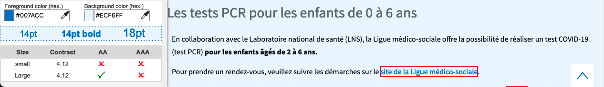 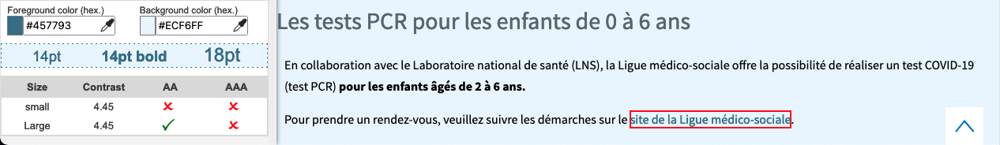Page « Tests PCR et autotests » :
- La couleur #007ACC des liens sur le fond #ECF6FF n'est pas suffisamment contrastée (ratio : 4.12) ;
- La couleur #457793 des liens au survol sur le fond #ECF6FF n'est pas suffisamment contrastée (ratio : 4.45).
Contraste des composants d'interface
Les composants d'interface, les illustrations porteuses d'information ou encore les mises en couleurs porteuses d'information doivent être suffisamment contrastés pour être perçus par les utilisateurs ayant des troubles de perception des couleurs. Par exemple, une icône porteuse d'information devra avoir un rapport de contraste avec la couleur de fond de 3. De même, pour un champ de saisie de formulaire, dont la zone active est matérialisée par sa bordure, alors la couleur de cette bordure devra avoir un rapport de contraste de 3 avec la couleur de fond de la page.
Constats sur le site
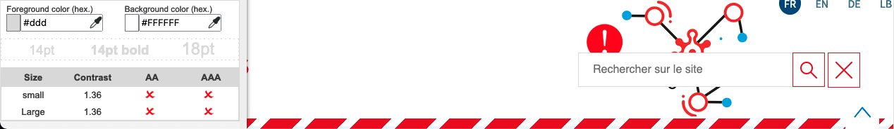Dans l'en-tête, la couleur #ddd de la bordure du champ de recherche a un rapport de contraste insuffisant avec le fond de la page #fff (ratio : 1.36).
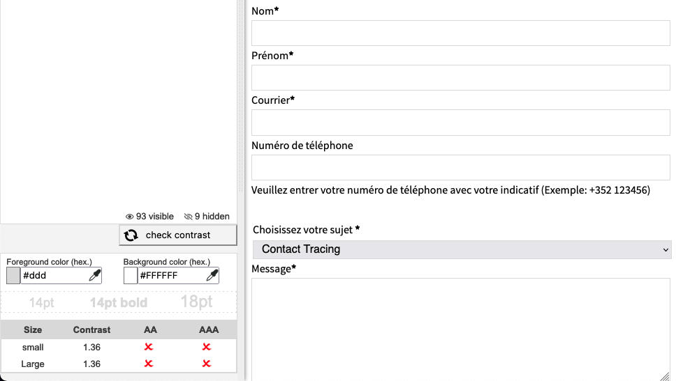Page « Contact », la couleur #ddd de la bordure des champs de formulaire a un rapport de contraste insuffisant avec le fond de la page #fff (ratio : 1.36).
Multimédia
Recommandation
Donner si nécessaire à chaque média temporel une transcription textuelle, des sous-titres synchronisés et une audiodescription synchronisée pertinents. Donner à chaque média non temporel une alternative textuelle pertinente. Rendre possible le contrôle de la consultation de chaque média temporel et non temporel au clavier et s'assurer de leur compatibilité avec les technologies d'assistance.
Identifier les vidéos
Il est nécessaire d'identifier la vidéo et permettre ainsi aux utilisateurs de comprendre quelle est l'information présentée dans ce contenu.
Vous disposez de deux méthodes pour le faire :
- soit faire précéder la vidéo par un titre (solution recommandée) ;
- soit faire suivre la vidéo d'une phrase de légende (paragraphe).
Constats sur le site
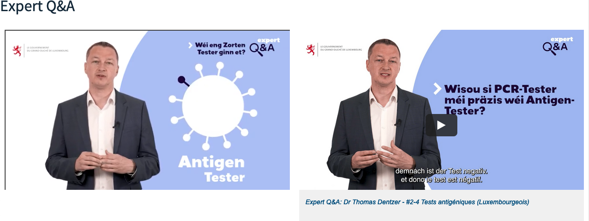 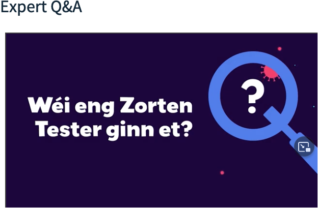Page « Tests PCR et autotests », les titres des vidéos « Expert Q&A: Dr Thomas Dentzer - #1 Test PCR, test antigénique et test de détection d'anticorps (Luxembourgeois) » et « Expert Q&A: Dr Thomas Dentzer - #2-4 Tests antigéniques (Luxembourgeois) » disparaissent une fois celles-ci lancées. Il n'est donc plus possible de les identifier.
Tableaux
Recommandation :
Donner un résumé à chaque tableau de données complexe, s'assurer que pour chaque tableau de données ayant un titre, ce titre est pertinent, identifier clairement les cellules d'en-tête, utiliser un mécanisme pertinent pour lier les cellules de données aux cellules d'en-tête. Pour chaque tableau de mise en forme, veiller à sa bonne linéarisation.
Tableaux de données complexes
Les tableaux de données complexes ont généralement plus d'un en-tête pour une même ligne ou une même colonne, contrairement aux tableaux simples.
Pour les tableaux de données complexes, les enjeux sont les suivants :
- Le tableau doit posséder un titre permettant de l'identifier et un résumé de sa structure (
<caption>) ; - Les en-têtes doivent être identifiés (balises
<th>) et doivent pouvoir être restitués lorsque l'utilisateur parcourt chaque cellule à l'aide de son lecteur d'écran (utilisation des attributsheadersetid).
Constats sur le site
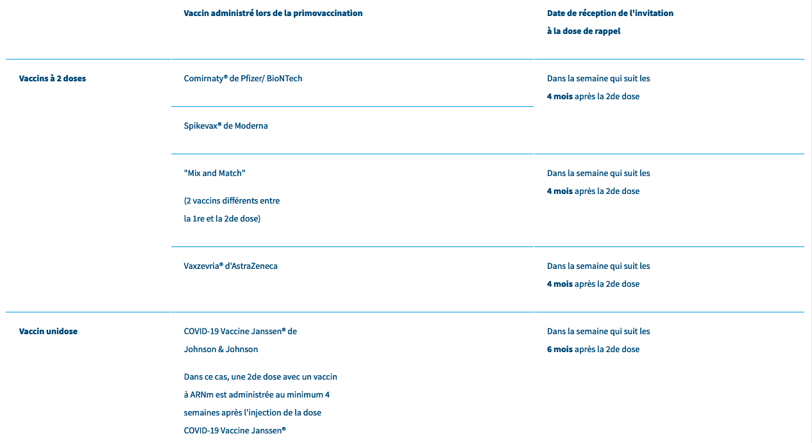Page « Article de blog » :
- Le tableau de données complexe « Date de rappel et prise de rendez-vous » n'a pas de titre ni de résumé permettant d'expliquer sa structure.
- Les en-têtes de colonne et de ligne du tableau de données complexe « Date de rappel et prise de rendez-vous » ne sont pas déclarés. Une fois que ce sera fait, il faudra lier les cellules du tableau à leurs en-têtes.
Liens
Recommandation :
Donner des intitulés de lien explicites, grâce à des informations de contexte notamment, utiliser le titre de lien le moins possible. S'assurer que le nom visible est contenu dans le nom accessible.
Pertinence des intitulés
Un lien possède généralement un intitulé et un contexte. L'intitulé est le texte présent dans la balise <a> (ou la valeur de l'attribut alt de l'image dans le cas d'un lien-image) et le contexte du lien est représenté par le titre qui précède, le titre du lien (l'infobulle) ou tout simplement le texte dans lequel il est inséré.
Pour être considéré comme pertinent, l'intitulé d'un lien doit permettre de comprendre sa destination en prenant en compte son contexte.
Constats sur le site
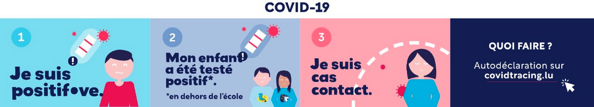Page d'accueil, les textes contenus dans le lien image « Autodéclaration sur covidtracing.lu - Nouvelle fenêtre » ne sont pas repris dans le nom accessible du lien. L'alternative de l'image (qui constitue le nom accessible du lien) devrait reprendre les informations lisibles sur l'image. De plus, l'attribut title du lien devra reprendre le nom accessible également.
Page « Aspects légaux », l'attribut title du lien « Accueil » du fil d'Ariane ne reprend pas le nom accessible du lien.
Scripts
Recommandation :
Donner si nécessaire à chaque script une alternative pertinente. Rendre possible le contrôle de chaque code script au moins par le clavier et la souris et s'assurer de leur compatibilité avec les technologies d'assistance. Identifier les messages de statut lorsque c'est nécessaire.
Utilisation des boutons et des liens
Pour les aveugles et les grands malvoyants qui utilisent un lecteur d'écran, ce manque de distinction claire entre les liens et les boutons peut poser de graves problèmes.
Ainsi, un bouton implémenté sous la forme d'un lien qui déclenche une action de la page, risque de perturber l'utilisateur qui s'attendra au chargement d'une nouvelle page.
De manière générale, les liens devraient être réservés à l'affichage d'une nouvelle page ou la création de liens d'accès rapide dans le contenu. Dans tous les autres cas, l'emploi d'un bouton d'action est plus pertinent.
Enfin, chaque bouton doit avoir un nom accessible défini, soit par l'intermédiaire d'un texte (visible ou positionné hors écran) ou d'une propriété title, aria-label ou aria-labelledby.
Constats sur le site
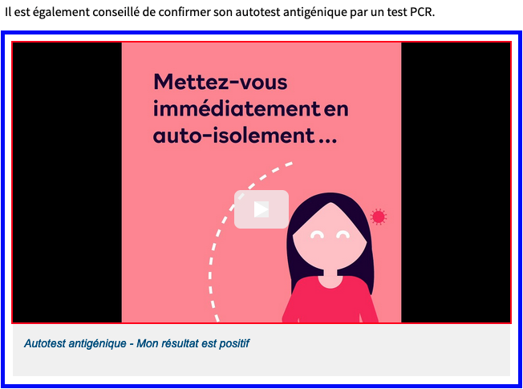 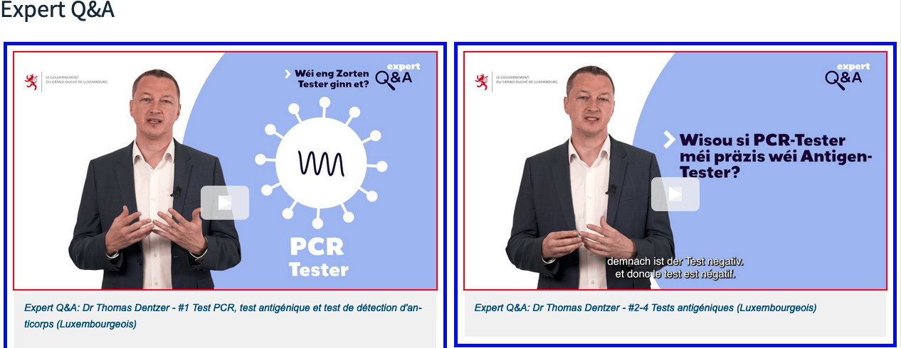Page « Tests PCR et autotests », les composants de lancement des vidéos déclenchent des événements JavaScript, mais sont implémentés dans des liens. Ils doivent être implémentés dans des éléments <button>.
 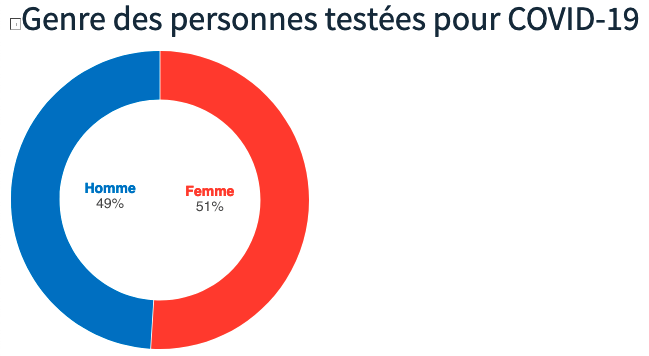
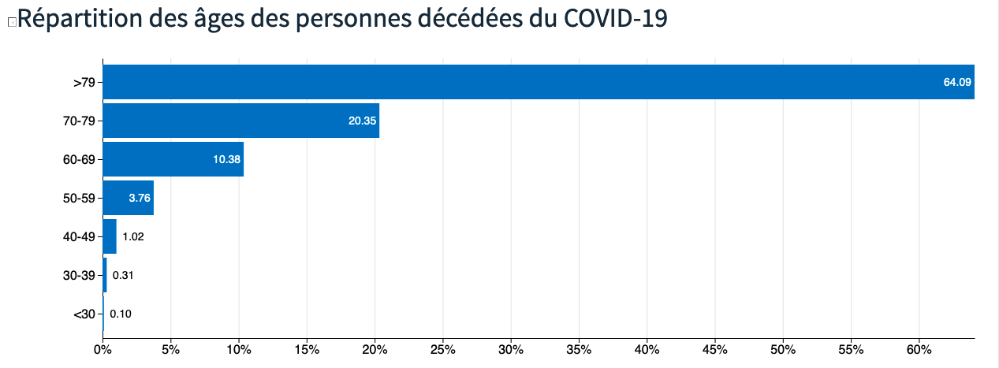
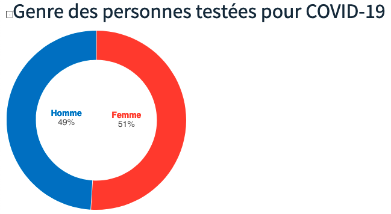
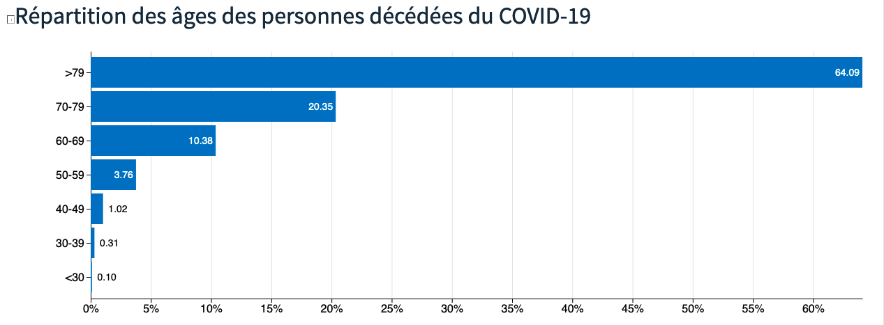
Page « Graphiques », les tableaux constituent des alternatives pertinentes aux graphiques, mais ne sont pas connus des personnes qui n'utilisent pas de lecteur d'écran. Il faut les rendre visibles.
Comme ils sont longs, il vaut mieux les rendre disponibles à l'intérieur d'un composant activable par l'utilisateur. Par exemple une zone afficher/masquer (balises <details> ou motif de conception ARIA Disclosure) ou une fenêtre modale.
Ajouter ce composant à la suite de la légende des graphiques et déplacer le tableau correspondant à l'intérieur.
Éléments obligatoires
Recommandation
Vérifier que chaque page web a un code valide selon le type de document, un titre pertinent et une indication de langue par défaut. Vérifier que les balises ne sont pas utilisées uniquement à des fins de présentation, que les changements de langues et de direction de sens de lecture sont indiqués.
Indication de langue
Les lecteurs d'écran utilisent les indications de langue pour vocaliser le contenu dans la langue définie. La page doit contenir une définition de langue principale (généralement sur l'élément html).
Ensuite, les éléments de langue étrangère présents dans le contenu doivent être signalés. Si on trouve dans la page des termes absents du dictionnaire de la langue principale de la page, il faut les identifier afin que le lecteur d'écran les restitue dans la langue appropriée. En effet, une mauvaise prononciation pourrait mener à des incompréhensions pour les utilisateurs qui reposent uniquement sur des restitutions orales. Les noms propres sont exclus de cette obligation.
Constats sur le site

Dans le menu principal, il n'y a pas de changement de langue identifié sur le lien "Contact tracing".
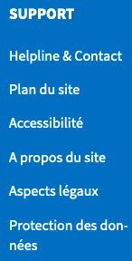Dans le pied de page, il n'y a pas de changement de langue identifié sur le lien "Helpline & Contact".
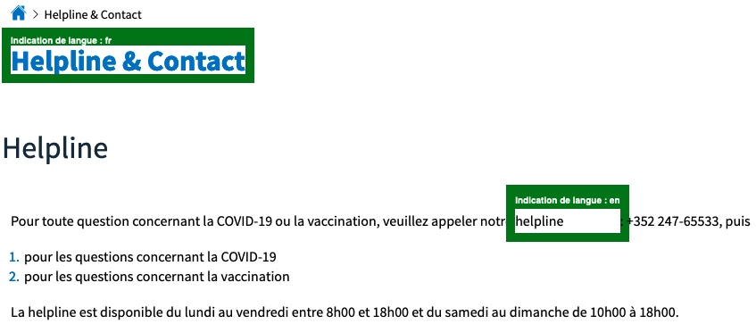Page « Contact » :
- Dans le fil d'Ariane, il n'y a pas de changement de langue identifié sur le texte "Helpline & Contact" ;
- L'indication de langue française sur le titre de la page "Helpline & Contact" n'est pas pertinente ;
- Il n'y a pas de changement de langue identifié sur le sous-titre "Helpline" ;
- Dans la phrase « La helpline est disponible du lundi... », il n'y a pas de changement de langue identifié sur le mot "helpline".
Balises utilisées à des fins de présentation
Les éléments de structure HTML ont chacun une sémantique particulière (paragraphe, titre, image, lien, etc.). Si les éléments sont mal employés (détournés de leur utilité première), cela peut poser des problèmes aux utilisateurs qui naviguent à l'aide d'une technologie d'assistance (lecteur d'écran, plug-in…). En effet, les technologies d'assistance disposent de raccourcis permettant de naviguer rapidement entre certains types d'éléments (paragraphes, titres, listes, etc.). Si ces éléments sont mal employés, les utilisateurs ne peuvent pas utiliser ces fonctionnalités de repère et de navigation dans le contenu.
Constats sur le site
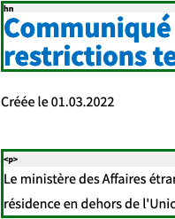 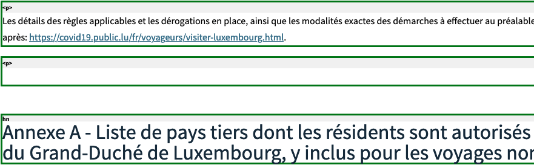Page « Actualité » :
- Le texte « Créée le 01.03.2022 » est uniquement structuré à l'aide de
<div>; - On trouve des paragraphes (
<p>) vides servant à créer des espacements, par exemple avant le titre « Annexe A - Liste de pays tiers dont les résidents sont autorisés... ».
Structuration de l'information
Recommandation
Utiliser des titres, des listes, des abréviations et des citations pour structurer l'information. S'assurer que la structure du document est cohérente.
Titres
Le titrage des contenus est une étape importante dans la structuration des contenus. Cela répond à deux besoins :
- identifier rapidement un contenu recherché ;
- naviguer rapidement dans le contenu en se déplaçant de titre en titre.
Un titrage correct fournit à l'utilisateur d'un lecteur d'écran un plan du document et lui permet de naviguer de titre en titre pour se déplacer plus rapidement dans le contenu de la page.
Pour valider la structure de votre page, vous pouvez utiliser l'extension Firefox HeadingsMap. Lorsque l'extension est active, sélectionnez l'onglet « Headings » et vérifiez la cohérence et l'imbrication des titres.
Constats sur le site
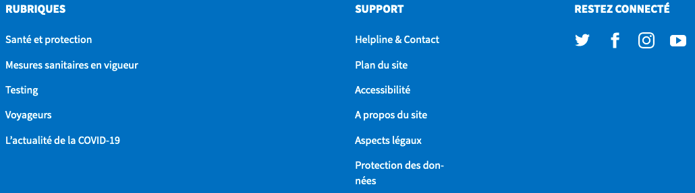Page d'accueil, les titres « Rubriques », « Support » et « Restez connecté » dans le pied de page doivent être des titres de niveau 2.
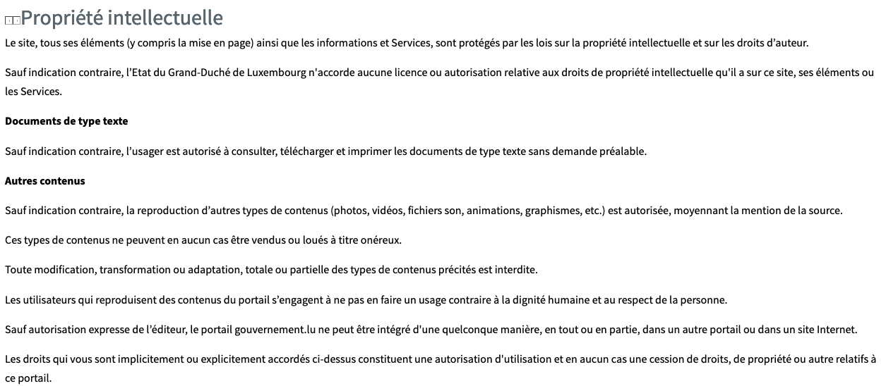Page « Aspects légaux », les textes « Documents de type texte » et « Autres contenus » de la partie « Propriété intellectuelle » doivent être des titres de niveau 4.
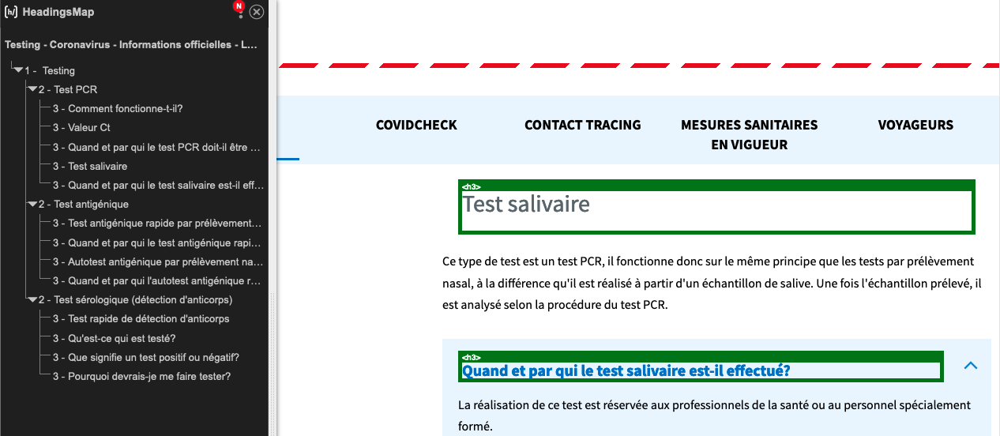Page « Testing » :
- Le texte « Quand et par qui le test salivaire est-il effectué? » doit être un titre de niveau 4.
- Le texte « Quand et par qui le test antigénique rapide par prélèvement nasal ou de la gorge doit-il être effectué? » doit être un titre de niveau 4.
- Le texte « Quand et par qui le test antigénique rapide par prélèvement nasal ou de la gorge doit-il être effectué? » doit être un titre de niveau 4.
- Le texte « Quand et par qui l'autotest antigénique rapide par prélèvement nasal doit-il être effectué? » doit être un titre de niveau 4.
- Le texte « Qu'est-ce qui est testé? » doit être un titre de niveau 4.
- Le texte « Que signifie un test positif ou négatif? » doit être un titre de niveau 4.
- Le texte « Pourquoi devrais-je me faire tester? » doit être un titre de niveau 4
Listes
La structuration en listes permet aux utilisateurs de lecteurs d'écran de consulter plus rapidement le contenu, grâce à des raccourcis spécifiques, et d'accéder directement à une liste ou de la passer sans avoir à en parcourir tous les items.
Constats sur le site
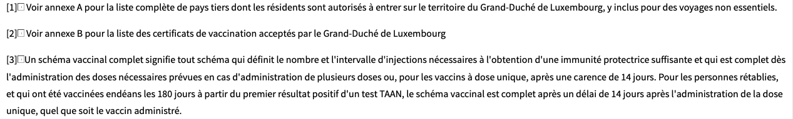Page « Actualité », la suite de notes de bas de page n'est pas structurée sous forme de liste.
Structure du document
L'utilisation correcte des balises HTML5 et des landmarks ARIA va permettre d'enrichir la restitution pour les utilisateurs aveugles qui ne perçoivent pas les mises en forme : la navigation principale ne sera plus perçue simplement comme une liste de liens, elle sera restituée à l'utilisateur comme un élément de navigation, par l'intermédiaire du lecteur d'écran qui annoncera « région » ou « repère ».
De plus, ces marqueurs sémantiques vont également constituer des éléments de navigation rapide dans la page. Grâce à un raccourci clavier, certains utilisateurs vont pouvoir naviguer plus rapidement entre les régions qui auront été ainsi identifiées.
Constats sur le site
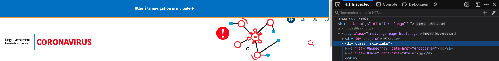Page d'accueil, les liens d'évitement ne sont pas structurés par une zone de navigation.
Présentation de l'information
Recommandation
Utiliser des feuilles de styles pour contrôler la présentation de l'information. Vérifier l'effet de l'agrandissement des tailles des caractères sur la lisibilité. S'assurer que les liens sont correctement identifiables, que la prise de focus est signalée, que l'interlignage est suffisant et donner la possibilité à l'utilisateur de contrôler la justification des textes. S'assurer que les textes cachés sont correctement restitués et que l'information n'est pas donnée uniquement par la forme ou la position d'un élément. S'assurer que les contenus sont lisibles et utilisables dans une fenêtre de largeur réduite. Veiller à ce que l'application de paramètres typographiques n'entraîne pas la perte de contenu ou de fonctionnalité. S'assurer que les contenus qui apparaissent au survol et à la prise de focus puissent être contrôlés par l'utilisateur.
Utilisation de CSS exclusivement
Certains utilisateurs qui présentent des troubles de la lecture (personnes dyslexiques par exemple), vont avoir besoin d'adapter la présentation des pages avec leurs propres mises en forme. Cela est possible sans difficulté si le site web utilise exclusivement les feuilles de styles CSS pour réaliser les mises en forme. Cependant, l'utilisation d'attributs et balises HTML de mise en forme rend ces adaptations plus compliquées, sinon impossibles.
Le RGAA donne la liste des attributs et balises qu'il est interdit d'utiliser.
Constats sur le site

Page « Article de blog », des attributs de présentation width sont utilisés sur des cellules du tableau « Date de rappel et prise de rendez-vous ».
Contenu compréhensible sans les styles : ordre visible vs ordre réel
Un utilisateur aveugle n'a pas accès à la mise en forme qui parfois est porteuse d'informations importantes, notamment des relations entre les éléments.
Il est important de ne pas implémenter les textes dans l'ordre visuel, mais bien dans l'ordre logique de dépendance et hiérarchie des éléments.
Le contenu doit rester compréhensible sans les feuilles de styles (vous pouvez tester vos contenus en désactivant les feuilles de styles).
Constats sur le site
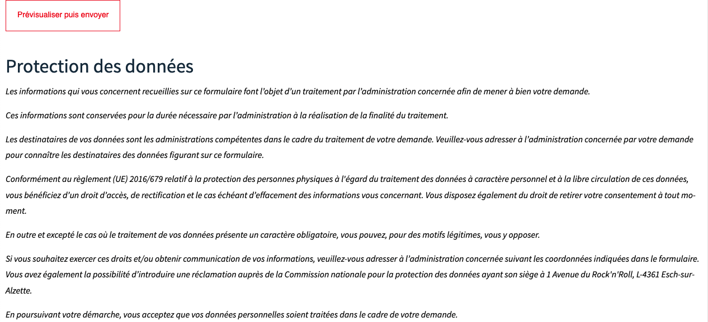Page « Contact », la partie « Protection des données » donne des informations sur le traitement des données du formulaire, mais se trouve après le bouton de soumission de ce formulaire.
- Ajouter un attribut
idà la partie « Protection des données » et une propriétéaria-describedbyau bouton « Prévisualiser puis envoyer ». La valeur de la propriétéaria-describedbyest la même que celle de l'attributidde la partie « Protection des données » ; - Déplacer éventuellement la partie « Protection des données » avant le bouton « Prévisualiser puis envoyer ». Vous pouvez repositionner le texte après le bouton à l'aide de CSS.
Formulaires
Recommandation :
Associer pour chaque formulaire chacun de ses champs à son étiquette, grouper les champs dans des blocs d'informations de même nature, regrouper les items de même nature dans les listes de choix, donner à chaque bouton un intitulé explicite. Vérifier la présence d'aide à la saisie, s'assurer que le contrôle de saisie est accessible et que l'utilisateur peut contrôler les données à caractère financier, juridique ou personnel.
Contrôle de saisie et aide à la saisie
Tous les champs obligatoires doivent être identifiés préalablement à toute validation de l’utilisateur.
Pour les champs qui attendent un format de saisie particulier pour être validés, ce format doit être spécifié à l’utilisateur par un passage de texte visible à proximité du champ. De plus, si l’utilisateur commet une erreur sur ce champ, alors le message d’erreur doit présenter un exemple réel de saisie.
Enfin, les messages d'erreur de saisie des champs de formulaire doivent être liés correctement aux champs en erreur.
Constats sur le site
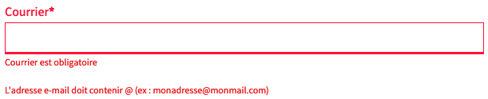Page « Contact », le champ « Courrier » attend un format particulier qui n'est pas précisé.
Identification des données attendues
Certains utilisateurs qui ont des troubles d'accès au langage verbal (paralysie cérébrale, aphasie par exemple) auront des difficultés à accéder au sens des termes écrits. Ainsi, pour leur permettre de remplacer les étiquettes présentes dans les formulaires par des étiquettes (verbales ou imagées) qu'ils connaissent, il est nécessaire d'identifier les champs avec un attribut particulier, de sorte qu'une technologie d'assistance pourra réaliser la personnalisation du formulaire nécessaire à l'utilisateur.
L'identification de ces champs permet également aux utilisateurs d'employer des outils pour remplir automatiquement les champs identifiés avec des valeurs de l'utilisateur.
On ne va rechercher que les champs qui attendent une donnée personnelle. Le RGAA demande d'utiliser l'attribut autocomplete et il fournit l'ensemble des valeurs possibles pour l'attribut.
Constats sur le site
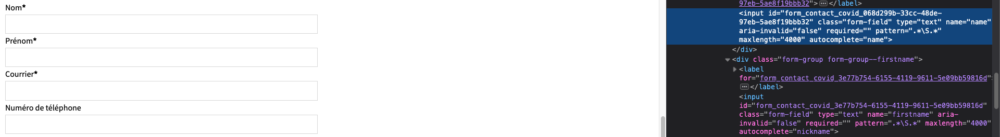Page « Contact », la valeur de l'attribut autocomplete des champs « Nom » et « Prénom » n'est pas pertinente.
Navigation
Recommandation :
Faciliter la navigation dans un ensemble de pages par au moins deux systèmes de navigation différents (menu de navigation, plan du site ou moteur de recherche), un fil d'Ariane et l'indication de la page active dans le menu de navigation. Identifier les groupes de liens importants et la zone de contenu et donner la possibilité de les éviter par des liens de navigation interne. S'assurer que l'ordre de tabulation est cohérent et que la page ne comporte pas de piège au clavier. S'assurer que les raccourcis clavier qui utilisent une seule touche sont contrôlables par l'utilisateur.
Systèmes de navigation
Le RGAA demande qu'un site propose au moins deux systèmes de navigations différents. Prévoir deux systèmes de navigation au moins est important, car :
- tous les utilisateurs ne naviguent pas de la même manière ;
- certains systèmes de navigation peuvent s'avérer trop complexes à utiliser, en particulier pour les personnes qui ont recours à des technologies d'assistance. Par exemple, un menu de navigation trop riche, comme un méga-menu, peut nécessiter beaucoup d'actions pour un utilisateur qui navigue exclusivement au clavier, et donc rendre sa recherche d'information très laborieuse.
Par systèmes de navigation, on entend tout procédé permettant une navigation dans le site ou dans une page, parmi :
- un menu principal de navigation ;
- un plan du site ;
- un moteur de recherche.
Note : un moteur de recherche est considéré comme un moyen de navigation s'il indexe toutes les pages du site (y compris les pages de type « Mentions légales » ou « Politique de confidentialité »), et non pas seulement un choix limité (par exemple, seulement les offres tarifaires).
Le plan du site, s’il est présent, doit être représentatif de l’arborescence du site et ne proposer que des liens fonctionnels.
Constats sur le site
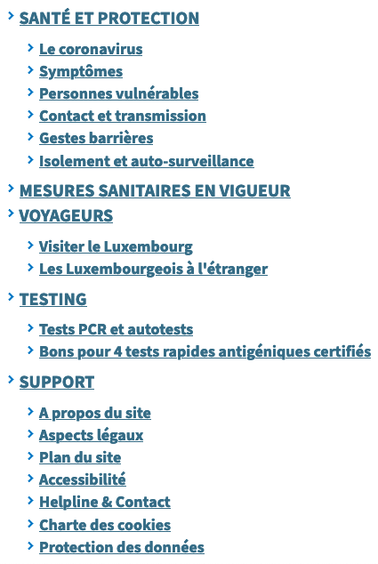La page « plan du site » n'est pas pertinente :
- Il manque des liens vers la rubrique « Vaccination » ;
- Il manque des liens vers la rubrique « CovidCheck » ;
- Il manque des liens vers la rubrique « Contact Tracing » ;
- Il manque un lien vers la rubrique « L'actualité de la COVID-19 » ;
- Il manque un lien vers la rubrique « Blog ».
Landmarks ARIA
Pour fournir des points de repère aux utilisateurs aveugles, il faudra également implémenter les landmarks ARIA sur les balises HTML 5 de la page.
Constats sur le site
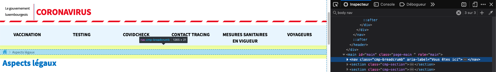Page « Aspects légaux », le fil d'Ariane n'est pas identifié comme zone de navigation.